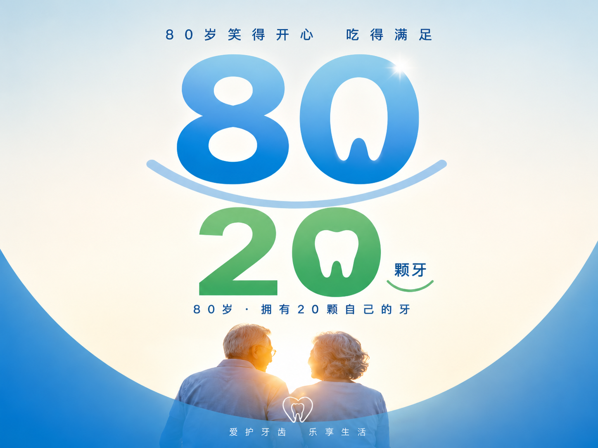

预防胜于一切的治疗
惠州惠尔口腔 · 全生命周期口腔健康管理
我们希望您来惠尔，不是因为牙疼。 而是为了让牙疼永远不会发生。
每一位来到惠尔口腔的顾客，医护人员在治疗的同时，都会积极提供预防保健指导， 帮助您掌握正确的刷牙方法，养成良好的口腔卫生习惯。 因为我们真心希望：您和您的牙齿，能相伴更久。
世界卫生组织（WHO）曾提出"8020"目标——到 80 岁时，依然拥有 20 颗功能良好的天然牙齿。这不是少数人的幸运，而是每个人都可以通过科学护理一步步接近的结果。刷牙、使用牙线、定期检查、及时洁治……每一项看似简单的日常，都是在为十年后、数十年后的牙齿健康积蓄。预防不是一次性的选择，而是与生活相伴的方式。

预防的第一步，从正确刷牙开始
每天早晚各刷一次，每次至少2分钟，牙刷与牙面呈45度角，轻轻颤动。
刷外侧面
牙刷与牙龈呈45°，小幅度水平颤动，每次2-3颗牙
刷内侧面
同样45°倾斜，刷毛指向牙龈，轻轻颤动清洁
刷咬合面
刷毛垂直对准咬合面，前后短距离来回刷
刷舌苔
轻轻刷洗舌苔表面，去除细菌，清新口气
记得每3个月更换一次牙刷 · 配合牙线使用效果更佳 · 每年至少做一次口腔检查
全生命周期口腔健康管理——惠尔口腔为您全程守护
乳牙期
乳牙萌出后即开始刷牙，每3-6个月涂氟，窝沟封闭防龋。
培养良好饮食习惯，避免奶瓶龋。
换牙期
关注恒牙萌出情况，早期矫治评估。
加强口腔卫生教育，预防龋病，做好窝沟封闭。
青少年期
矫正牙齿的黄金期。
注意青春期牙龈炎防治，保持良好口腔卫生习惯。
成年期
定期洁牙，关注牙周健康。
孕前做好口腔检查，孕期注意牙龈问题。
中年期
牙周疾病高发期，定期牙周维护。
关注牙齿磨损、敏感问题，及时修复缺失牙。
老年期
目标：80岁拥有20颗功能牙。
定期检查、积极治疗，义齿也需要专业维护。
全学科覆盖 · 为您和家人的口腔健康保驾护航
遵义医科大学毕业，从事口腔正畸临床工作多年，擅长口腔正畸与颜面管理、口腔美学修复。
擅长口腔种植与口腔正畸，在种植修复领域拥有丰富的临床经验。
擅长全科综合治疗与口腔预防保健，为患者提供全面的口腔健康管理服务。
擅长牙体牙髓治疗，专注显微根管治疗与牙体保存修复。
擅长儿童早期矫治，致力于儿童口腔健康管理与颌面发育引导。
擅长种植修复与牙周治疗，注重牙周健康与种植体长期稳定。
擅长儿童口腔、口腔内科、修复治疗及综合治疗，在口腔修复领域经验丰富。